Cómo cargar y aprobar presupuestos, seguir las tareas del festival y no perderse ningún vencimiento.
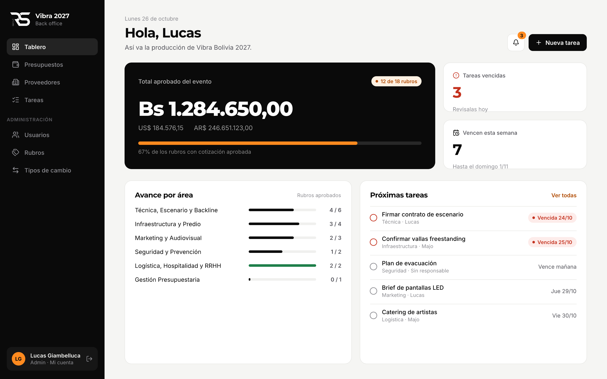
RS Group · Uso internoVersión 1 · Octubre 2026
Contenido
Índice
1Qué es el back office y quién lo usa Roles y permisos
2Entrar y moverse Login, menú, celular
3Tablero El resumen del día
4Presupuestos Rubros, cotizaciones y aprobación
5Proveedores Contactos
6Tareas El to-do del evento
7Recordatorios y notificaciones Campanita y email
8Administración Usuarios, rubros, tipos de cambio
9Mi cuenta Avisos y contraseña
10Preguntas frecuentes
1 · Introducción
Qué es el back office
Es la herramienta interna del equipo de producción de Vibra Bolivia 2027. Reúne en un solo lugar todos los presupuestos del evento y las tareas pendientes, ordenados por las seis áreas del festival.
Para qué sirve
Comparar cotizaciones de distintos proveedores para cada cosa que hay que contratar (sonido, pantallas, vallas…) y aprobar la elegida.
Saber cuánto cuesta el evento: el total aprobado se calcula solo, en bolivianos, dólares y pesos argentinos.
Seguir las tareas del festival con responsable y fecha límite, con recordatorios automáticos.
Las seis áreas
Marketing y Audiovisual · Técnica, Escenario y Backline · Logística, Hospitalidad y RRHH · Infraestructura y Predio · Seguridad y Prevención · Gestión Presupuestaria.
Roles y permisos
Cada persona entra con su propio usuario. Hay dos roles:
Qué se puede hacer
Editor
Admin
Ver todo el sistema
✓
✓
Cargar y editar cotizaciones, proveedores y tareas
✓
✓
Aprobar una cotización o revertir una aprobación
—
✓
Borrar registros
—
✓
Configuración: usuarios, rubros y tipos de cambio
—
✓
¿No ves la sección Administración?Es normal si sos editor: el menú solo muestra lo que tu rol puede usar.
2 · Primeros pasos
Entrar y moverse
Entrar
Abrí la dirección del back office en el navegador (computadora o celular).
Escribí el email y la contraseña que te dio el admin.
Tocá Entrar. Si la contraseña es incorrecta, el sistema te lo avisa debajo del formulario.
¿Olvidaste la contraseña?No hay recuperación por email: pedile al admin que te asigne una nueva y después cambiala desde Mi cuenta.
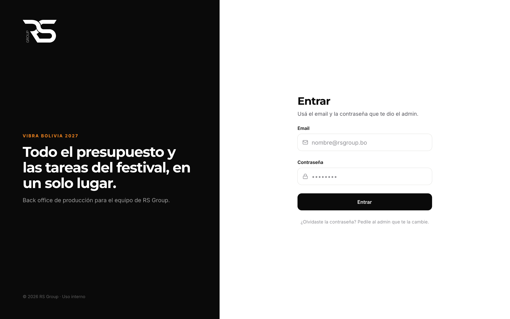
Pantalla de entrada en la computadora.
El menú
En la computadora, el menú está siempre a la izquierda: Tablero, Presupuestos, Proveedores y Tareas; los admins ven además Administración. Abajo de todo está tu nombre: tocalo para ir a Mi cuenta, o tocá el ícono de la flecha para salir.
Arriba a la derecha de cada pantalla está la campanita de notificaciones y la acción principal de esa pantalla (por ejemplo, Nueva tarea).
2 · Primeros pasos
En el celular
El back office se ve completo desde el celular, sin instalar nada. El menú lateral se reemplaza por una barra de pestañas abajo, al alcance del pulgar:
Tablero, Presupuestos y Tareas: lo mismo que en la computadora.
Más: Proveedores, Administración (solo admins), Mi cuenta y Salir.
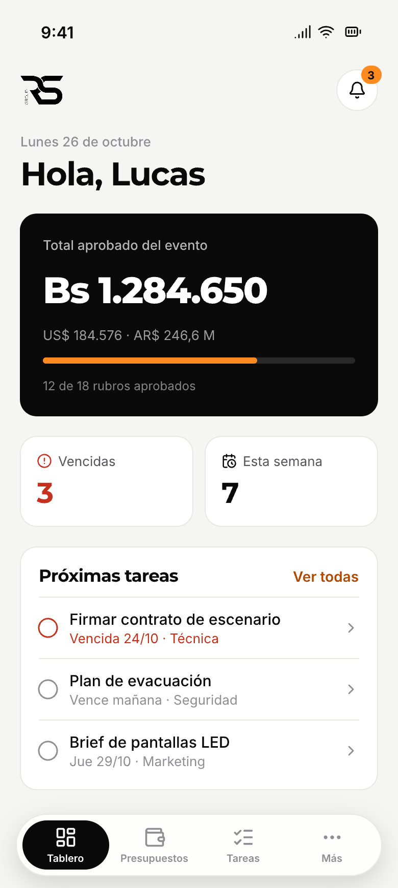
Tablero.
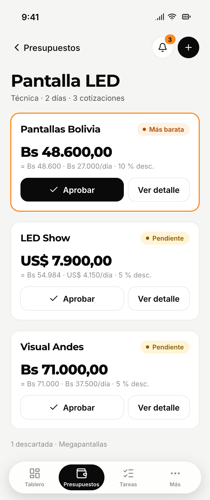
Comparar cotizaciones.
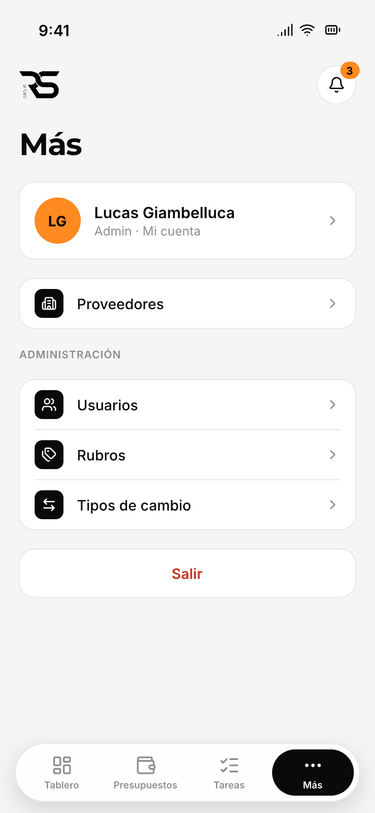
Menú “Más”.
TipAgregalo a la pantalla de inicio del celular (en Safari o Chrome: Compartir → Agregar a inicio) para abrirlo como una app.
3 · Tablero
El resumen del día
Es la primera pantalla al entrar. Responde de un vistazo: cuánto llevamos aprobado y qué hay que resolver hoy.
Tablero en la computadora.
Total aprobado del evento (tarjeta negra): suma de todas las cotizaciones aprobadas, en BOB, USD y ARS. La barra naranja muestra cuántos rubros ya tienen cotización aprobada.
Tareas vencidas y que vencen esta semana: los números a mirar primero.
Avance por área: rubros aprobados sobre el total de cada área. La barra se pone verde cuando el área está completa.
Próximas tareas: las vencidas (en rojo) y las de los próximos 7 días. Tocá una para abrirla.
¿El total muestra un aviso en lugar de un número?Falta el tipo de cambio de alguna moneda que se usó en una cotización aprobada. Un admin lo carga en Administración → Tipos de cambio.
4 · Presupuestos
Rubros y cotizaciones
Un rubro es algo que hay que contratar (Sonido, Pantalla LED, Vallas…). Cada rubro recibe varias cotizaciones de distintos proveedores, y una sola se aprueba.
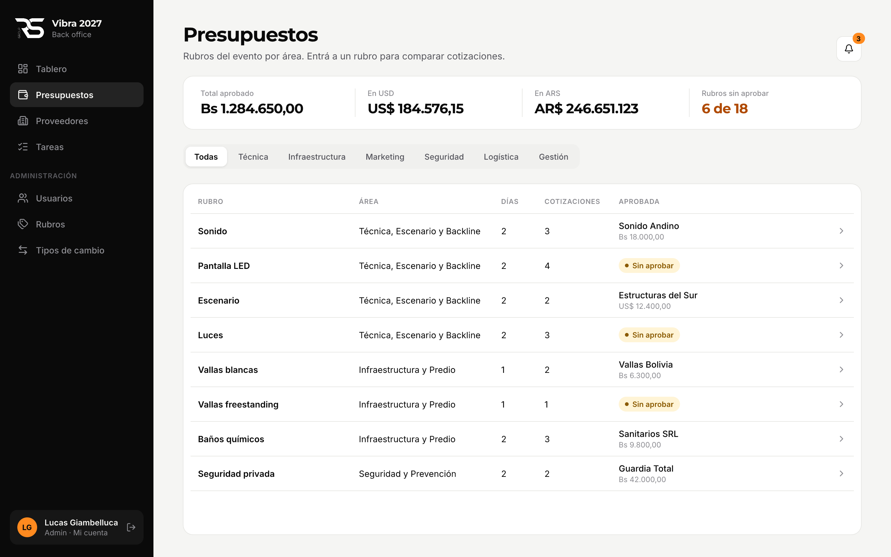
Lista de rubros con su estado de aprobación.
Arriba ves el total aprobado y cuántos rubros faltan aprobar. Usá las pestañas para filtrar por área. Cada fila muestra cuántas cotizaciones tiene el rubro y, si ya hay una aprobada, el proveedor y el monto; si no, la etiqueta Sin aprobar. Tocá un rubro para entrar a comparar.
Cómo se calcula el total de una cotización
Rubro de…
Total
1 día
precio por día
2 días
precio por día × 2, menos el % de descuento por contratar los dos días. La diferencia se muestra como ahorro.
Para poder comparar cotizaciones en monedas distintas, todas se pasan a bolivianos con los tipos de cambio cargados.
4 · Presupuestos
Comparar y aprobar
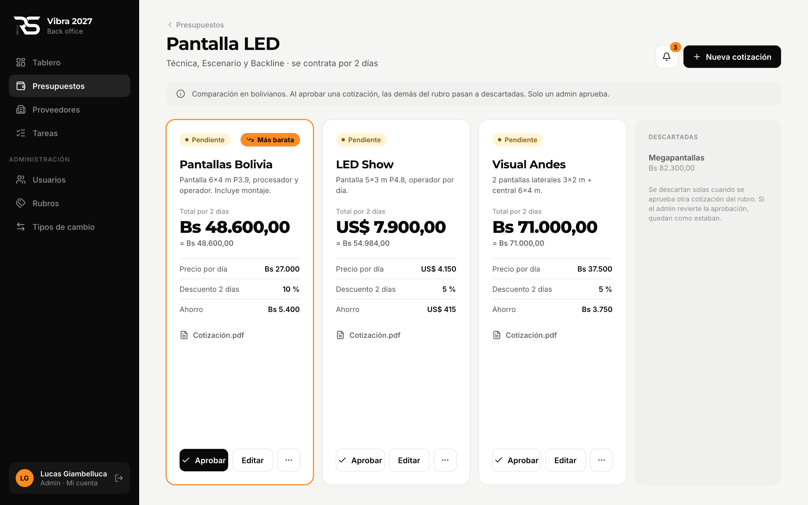
Las cotizaciones de un rubro, lado a lado.
Cada tarjeta muestra el proveedor, qué incluye, el total, su equivalente en bolivianos, el precio por día, el descuento, el ahorro y el PDF de la cotización si se adjuntó.
La más barata (en bolivianos) se destaca con borde naranja y la etiqueta Más barata.
Las descartadas aparecen aparte, tachadas.
Cargar una cotización
Dentro del rubro, tocá Nueva cotización.
Elegí el proveedor (si no existe, primero crealo en Proveedores), la moneda y escribí qué incluye.
Cargá el precio por día y, si el rubro es de 2 días, el % de descuento. Usá coma para los decimales.
Opcional: adjuntá el PDF que mandó el proveedor (hasta 10 MB).
Tocá Agregar cotización. Queda Pendiente.
4 · Presupuestos
Aprobar
Solo los admins aprueban
Tocá Aprobar en la cotización elegida. En ese mismo momento:
Queda Aprobada, con tu nombre y la fecha.
Las demás cotizaciones del rubro pasan a Descartada.
El total del evento se actualiza.
Para deshacerlo, tocá Revertir: vuelve a pendiente y las descartadas quedan como estaban. Si dos admins aprueban al mismo tiempo en el mismo rubro, el sistema acepta una y al otro le pide recargar la página.
4 · Presupuestos
Editar una cotización
Cualquier usuario puede editar una cotización: proveedor, moneda, qué incluye, precio, descuento y PDF (reemplazarlo o quitarlo). El rubro no se cambia: si te equivocaste de rubro, cargala de nuevo en el correcto.
Si editás una cotización aprobada siendo editorVuelve a pendiente y un admin la tiene que aprobar de nuevo. Mientras tanto, deja de sumar al total del evento. El sistema te avisa antes de guardar.
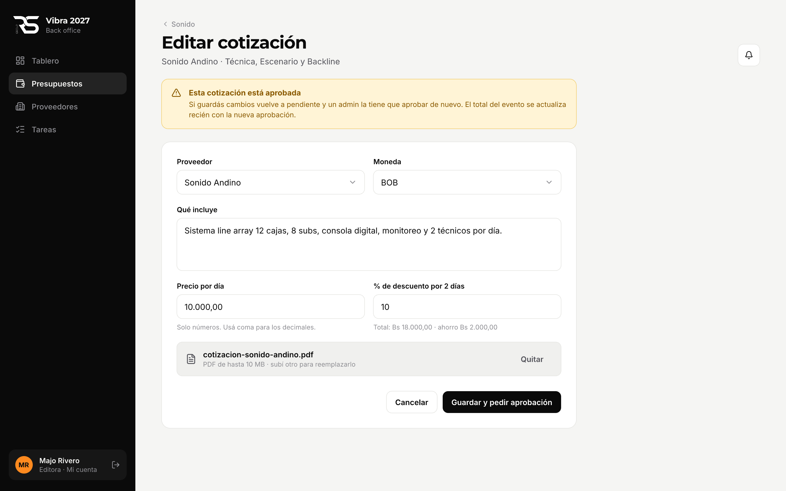
Lo que ve un editor al abrir una cotización aprobada.
Si la edita un admin, la cotización sigue aprobada: el cambio ya cuenta con su visto bueno.
5 · Proveedores
Proveedores
La agenda de quienes cotizan para el evento.
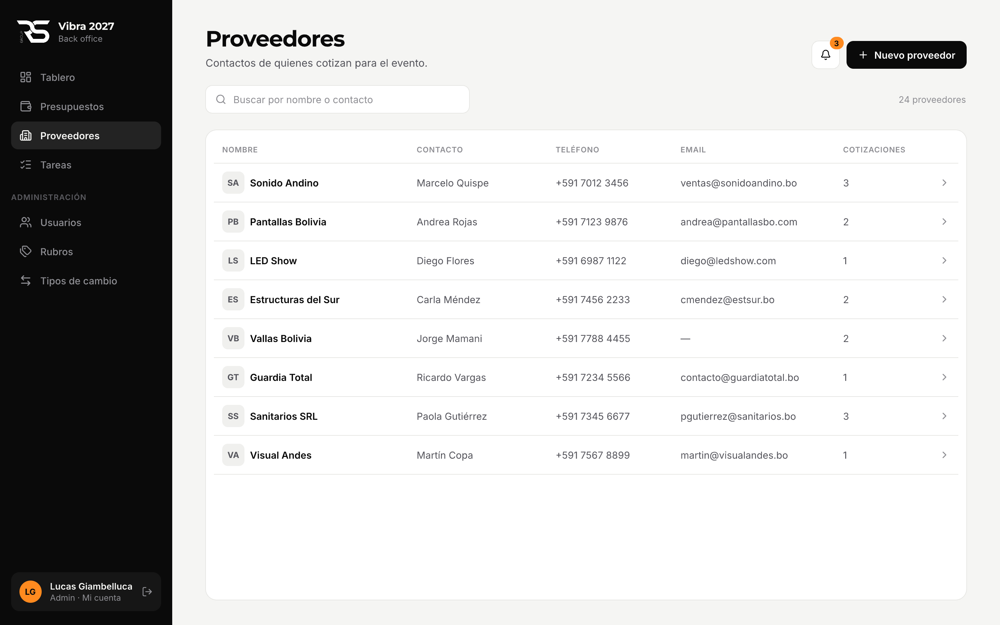
Lista de proveedores con buscador.
Nuevo proveedor: nombre (obligatorio), persona de contacto, teléfono, email y notas.
Usá el buscador para encontrar por nombre o por contacto.
Tocá un proveedor para editar sus datos y ver todas sus cotizaciones en cualquier rubro.
¿No se puede borrar un proveedor?Un proveedor con cotizaciones no se puede borrar, para no perder historial. Primero hay que borrar sus cotizaciones (solo admin).
6 · Tareas
El to-do del evento
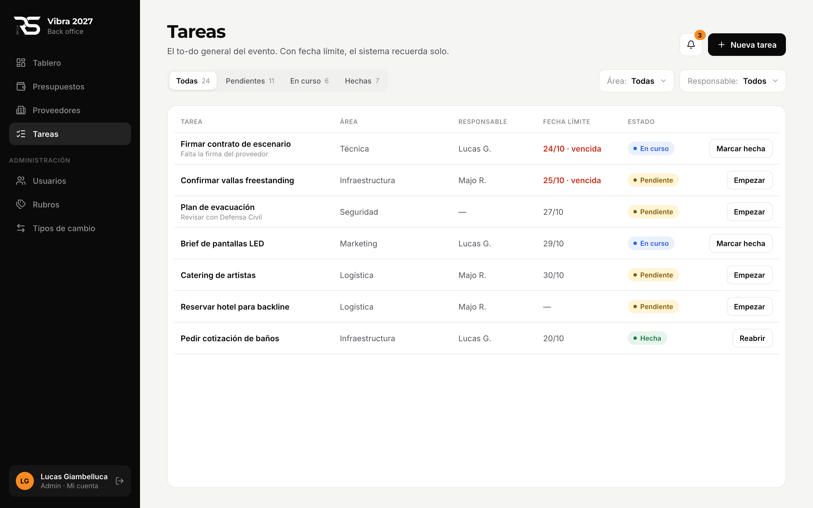
Lista de tareas con filtros.
Crear una tarea
Tocá Nueva tarea.
Escribí qué hay que hacer y elegí el área.
Elegí el responsable. Si no tiene, los avisos les llegan a todos los admins.
Opcional: poné una fecha límite (activa los recordatorios automáticos) y notas.
Estados
Pendiente → En curso → Hecha. Cambiá el estado con el botón de cada fila (Empezar, Marcar hecha, Reabrir) o desde el detalle. Una tarea con fecha límite pasada que no está hecha se marca en rojo como vencida.
Filtrar
Arriba de la lista: por estado (pestañas), por área y por responsable.
6 · Tareas
Detalle de una tarea
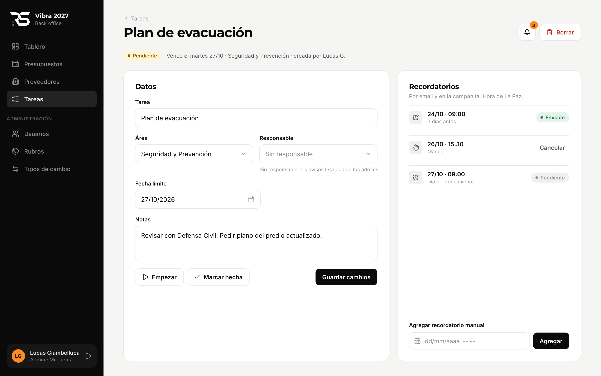
Datos de la tarea a la izquierda, recordatorios a la derecha.
Editá cualquier dato y tocá Guardar cambios.
Si cambiás la fecha límite, los recordatorios automáticos se recalculan solos.
Al marcarla hecha (o borrarla) se cancelan todos sus recordatorios pendientes.
Borrar la tarea es solo para admins y pide confirmación.
7 · Recordatorios
Recordatorios y notificaciones
El sistema avisa solo cuando se acerca o se pasa una fecha límite. Todos los horarios son de La Paz.
Recordatorios automáticos
Cuándo
Aviso
3 días antes de la fecha límite, 09:00
“Tarea” vence en 3 días (fecha)
El día de la fecha límite, 09:00
“Tarea” vence hoy
Cada día a las 09:00 mientras siga vencida
“Tarea” está vencida desde el (fecha), hasta que se marque hecha
Recordatorios manuales
Quien creó la tarea (o un admin) puede agregar uno en una fecha y hora puntual desde el detalle de la tarea, y cancelarlo mientras no se haya enviado.
7 · Recordatorios
La campanita
A quién le llegan
Al responsable de la tarea. Si no tiene responsable, a todos los admins. Llegan siempre a la campanita y, si la persona lo tiene activado en Mi cuenta, también por email.
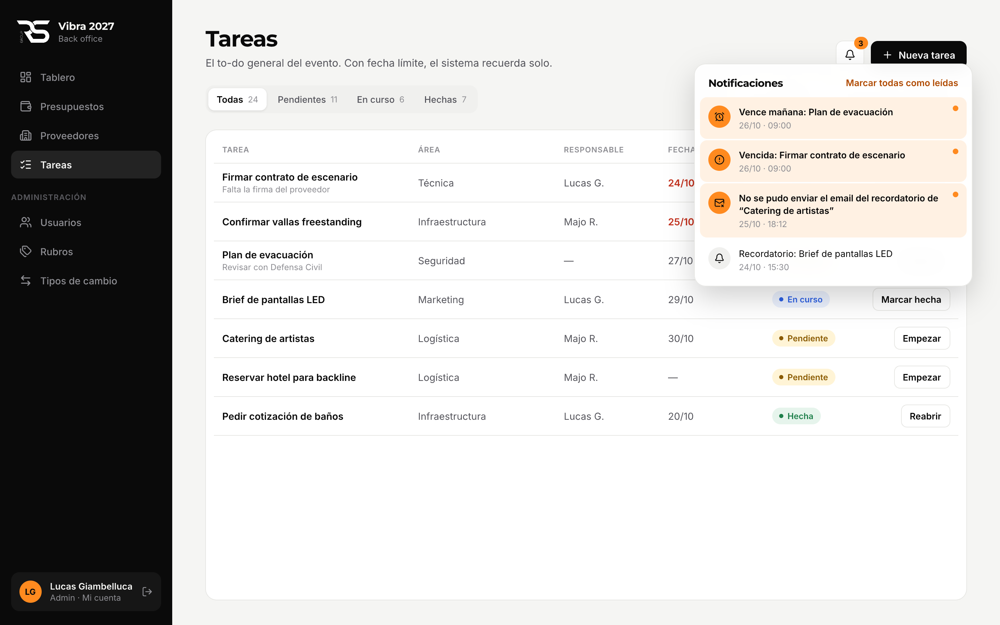
La campanita abierta: las no leídas se destacan en naranja.
El número sobre la campanita indica cuántas notificaciones no leíste.
Tocá una notificación para abrir la tarea; queda marcada como leída.
Marcar todas como leídas limpia el contador.
Si un email no saleEl sistema lo reintenta varias veces. Si igual no se puede enviar, los admins reciben un aviso en la campanita para revisar el email del destinatario.
8 · Administración
Usuarios
Solo admins. Quién entra al sistema y qué puede hacer.
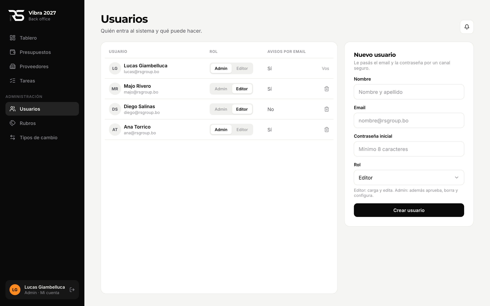
Usuarios y alta de un usuario nuevo.
Completá nombre, email, contraseña inicial (mínimo 8 caracteres) y rol.
Tocá Crear usuario.
Pasale el email y la contraseña a la persona por un canal seguro y pedile que la cambie desde Mi cuenta.
El rol de cada usuario se cambia con el selector Admin / Editor de su fila.
El ícono de papelera borra el usuario (pide confirmación). No podés borrar tu propio usuario ni cambiar tu propio rol: lo hace otro admin.
8 · Administración
Rubros
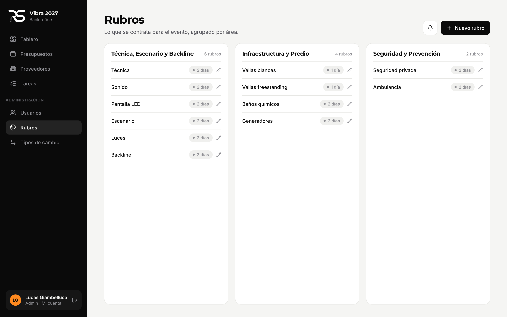
Rubros agrupados por área.
Creá un rubro con nombre, área y cantidad de días a contratar (1 o 2). Los días definen cómo se calcula el total de sus cotizaciones. Un rubro con cotizaciones no se puede borrar.
8 · Administración
Tipos de cambio
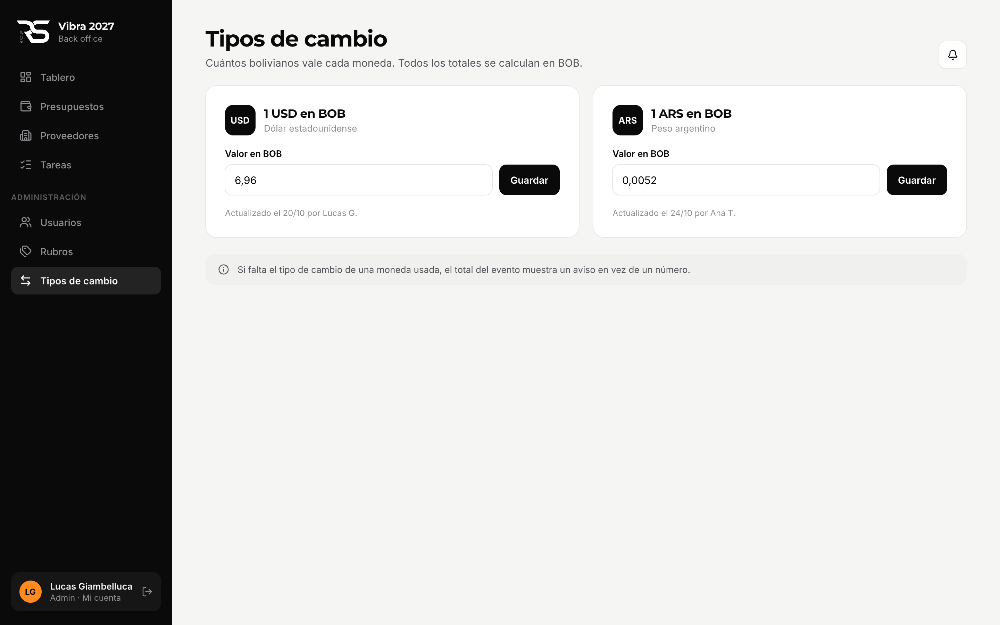
Cuántos bolivianos vale cada moneda.
Cargá cuántos bolivianos vale 1 dólar y 1 peso argentino. Se guarda quién lo actualizó y cuándo. Al cambiar un valor, todos los totales en BOB se recalculan.
9 · Mi cuenta
Mi cuenta
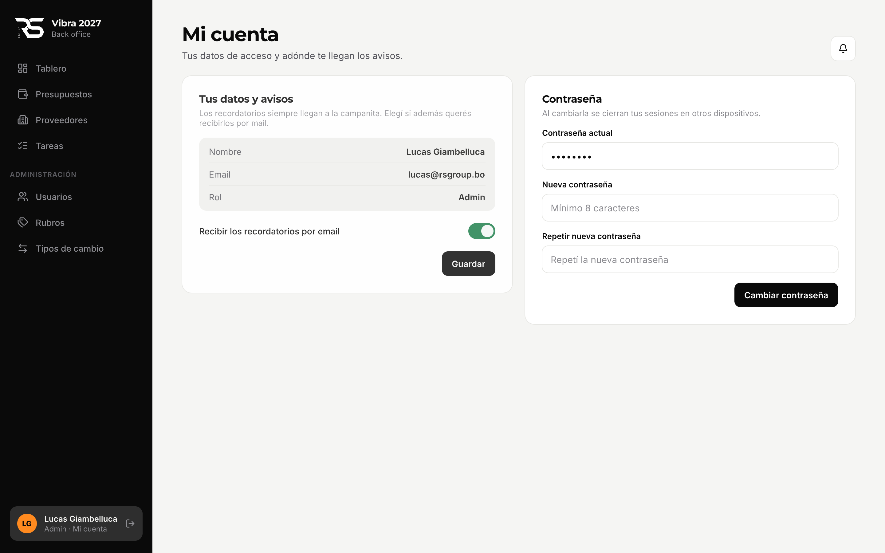
Avisos por email y cambio de contraseña.
Recibir los recordatorios por email: activado por defecto. Si lo apagás, los avisos te siguen llegando a la campanita.
Contraseña: escribí la actual y la nueva dos veces (mínimo 8 caracteres). Al cambiarla se cierran tus sesiones en otros dispositivos.
10 · Ayuda
Preguntas frecuentes
Edité una cotización y desapareció del total.
Estaba aprobada y la editaste como editor: volvió a pendiente. Pedile a un admin que la apruebe de nuevo.
No me aparece el botón “Aprobar”.
Solo los admins aprueban. Si tenés que aprobar, pedile a un admin que te cambie el rol.
No me llegan los emails de recordatorio.
Revisá en Mi cuenta que esté activado “Recibir los recordatorios por email” y mirá la carpeta de spam. Igual, todo aviso queda en la campanita.
Una tarea no tiene recordatorios.
Los automáticos se crean solo si la tarea tiene fecha límite. Poné una o agregá un recordatorio manual.
Me equivoqué de rubro al cargar una cotización.
El rubro no se puede cambiar. Cargala de nuevo en el rubro correcto y pedile a un admin que borre la equivocada.
El total del evento dice que falta un tipo de cambio.
Hay una cotización aprobada en USD o ARS y ese tipo de cambio no está cargado. Un admin lo carga en Administración → Tipos de cambio.
¿Algo no funciona como dice este manual?Escribile al admin del sistema con una captura de pantalla y qué estabas haciendo.